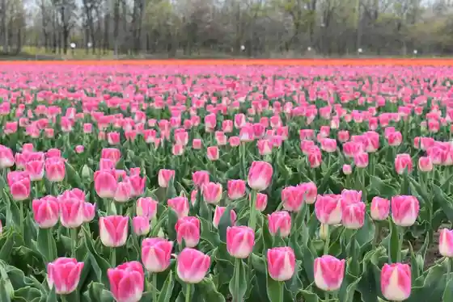
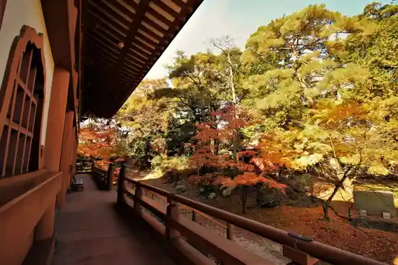

Tainai Churippufesuteibaru 2026
Tainai, Niigata · 0254-43-6111 · Official / source link

Tsurudo Tainai 2026
Tainai, Niigata · 0254-47-3408 · Official / source link
Otsu Takara Tera
Tainai, Niigata · 0254-46-2016 · Official / source link

Tarugahashi Yuen
Tainai, Niigata · 0254-47-3521 · Official / source link
Shio no Yu Onsen
Tainai, Niigata · 0254-45-3325 · Official / source link
Muramatsu Hama Beach
Tainai, Niigata · 0254-43-6111 · Official / source link
Tainai Boto Park
Tainai, Niigata · 0254-48-3435 · Official / source link
Tainai Fisshingu Park
Tainai, Niigata · 0254-48-3435 · Official / source link
Tainai Muryo Campground Natsui River Park
Tainai, Niigata · 0254-43-6111 · Official / source link
Nagaike Ikoi no Mori Park
Tainai, Niigata · 0254-43-6111 · Official / source link
Okuyama So Rekishi no Plaza Okuyama So Rekishikan
Tainai, Niigata · 0254-44-7737 · Official / source link
Shin Tarugahashi Onsen (Kuahausu Tainai)
Tainai, Niigata · 0254-47-2660 · Official / source link
Oku Tainai
Tainai, Niigata · 0254-43-6111 · Official / source link
Oku Tainai Dam Kengaku Tour
Tainai, Niigata · 0254-43-6111 · Official / source link
Tainai Kuresuton Hakase no Kan Tainai Togei Taiken Kan
Tainai, Niigata · 0254-48-2011 · Official / source link
Shinkuruton Memorial Park
Tainai, Niigata · 0254-47-3409 · Official / source link
Tainai no Hina Festival
Tainai, Niigata · 0254-47-2723 · Official / source link
Kurokawa Nen Mizu Matsuri
Tainai, Niigata · 0254-47-3409 · Official / source link
Tainai Highlands Biiru Sono
Tainai, Niigata · 0254-48-2020 · Official / source link
Echigo Tainai Kannon Zo
Tainai, Niigata · 0254-47-2965 · Official / source link
Tainai Irumineshon
Tainai, Niigata · 0254-47-2723 · Official / source link
Oideyo ! Hon Town Marushie Chugakuseigahon Town Tori Shopping Street no Kasseika Ni Chosen !
Tainai, Niigata · Official / source link
Okuyama So Jokan Iseki Egami Yakatato
Tainai, Niigata · 0254-43-6111 · Official / source link
Tainai Furawa Park
Tainai, Niigata · 0254-43-6111 · Official / source link
Otsu Manju
Tainai, Niigata · 0254-46-2008 · Official / source link
Tainai Campground Ranch no Ikkaku Niaru Matsubara Suteburusu
Tainai, Niigata · 090-4920-2493 · Official / source link
Kurokawa Sekiyu Park (Kurokawa no Kusozu)
Tainai, Niigata · 0254-47-3409 · Official / source link
Hamanasu no Oka (Lookout)
Tainai, Niigata · 0254-43-6111 · Official / source link
Matsuo Basho Kuhi
Tainai, Niigata · 0254-46-2016 · Official / source link
Hon Town Bia Garden 2026
Tainai, Niigata · Official / source link
Tainai Resort
Tainai, Niigata · 0254-43-6112 · Official / source link
Tainai Art Museum
Tainai, Niigata · 0254-47-2288 · Official / source link
Oku Tainai Hyutte
Tainai, Niigata · 0254-43-6111 · Official / source link
KUSHIGATA2026- Kushigata Sanmyaku Yamabiraki Juso Tozan
Tainai, Niigata · 0254-43-6111 · Official / source link
Tainai Muryo Campground Sekizawa Forest Park
Tainai, Niigata · 0254-43-6111 · Official / source link
Tainai Konchu no Ie
Tainai, Niigata · 0254-48-3300 · Official / source link
Tainai Onsen
Tainai, Niigata · Official / source link
Tainai Konchu no Ie (Mushi Tori Chanpion Taikai)
Tainai, Niigata · 0254-48-3300 · Official / source link
Meika (Hakucho)
Tainai, Niigata · 0254-43-8911 · Official / source link
Kushigata Sanmyaku Sekizawa Tozanguchi
Tainai, Niigata · 0254-43-6111 · Official / source link
Kotohira Shrine
Tainai, Niigata · 0254-43-6111 · Official / source link
Roadside Station Tainai (Taruga Hashi Kanko Koryu Center) (Niigataken Michi 53 Go Tainai Nio Ko Koen Haguro Sen)
Tainai, Niigata · 0254-47-2723 · Official / source link
Tainai Nature Tenmonkan
Tainai, Niigata · 0254-48-0150 · Official / source link
Kumano Wakamiya Jinja Kyuden
Tainai, Niigata · 0254-43-6111 · Official / source link
Chihon Mizubasho (Mizu Basho)
Tainai, Niigata · 0254-43-6111 · Official / source link
JA Kitashin Kata Nosambutsu Chokubai Tokoro (Tainai Fureai Ho Saikan)
Tainai, Niigata · 0254-43-5511 · Official / source link
Tarugahashi
Tainai, Niigata · 0254-47-2723 · Official / source link
Hangaku Hotaru Village
Tainai, Niigata · 0254-43-6111 · Official / source link
Tanomogi Yama Tainai Tozanguchi
Tainai, Niigata · 0254-43-6111 · Official / source link
Tainai Sakura Festival
Tainai, Niigata · 080-1064-4251 · Official / source link
Soba Tokoro Miyuki Iori
Tainai, Niigata · 0254-48-3818 · Official / source link
Tainai Gorge
Tainai, Niigata · 0254-43-6111 · Official / source link
Tainai Sanpachi City
Tainai, Niigata · 0254-43-6111 · Official / source link
Akagawa Kasumitei Park
Tainai, Niigata · 0254-43-6111 · Official / source link
Shiro no Yama Burial Mound
Tainai, Niigata · 0254-47-2711 · Official / source link
Nagaike Nosambutsu Chokubai Tokoro Rippuru
Tainai, Niigata · 0254-43-6111 · Official / source link
Oishi Yama Tainai Tozanguchi
Tainai, Niigata · 0254-43-6111 · Official / source link
Tainai Taira
Tainai, Niigata · 0254-48-0150 · Official / source link
Kairi - Niigata Shonai no Kutto Keikan Wo Tanoshi Mu Ressha
Tainai, Niigata · 03-6231-7389 · Official / source link
Kangasu Buruberii Farm Buruberii Kari
Tainai, Niigata · 090-7907-0140 · Official / source link
Tainai Sangyo Culture Hall
Tainai, Niigata · 0254-43-6400 · Official / source link
Tainai Campground Nagaike Ikoi no Mori Park
Tainai, Niigata · 0254-43-6111 · Official / source link
Arakawa Jinja Hono Mokei Wasen Fune Ema
Tainai, Niigata · 0254-43-6111 · Official / source link
Monnai Gaku Tainai Tozanguchi
Tainai, Niigata · 0254-43-6111 · Official / source link
Iide Renpo Tozan Tainai Tozanguchi
Tainai, Niigata · 0254-43-6111 · Official / source link
Puresupo Tainai (Tainai Sogo Gym)
Tainai, Niigata · 0254-43-0003 · Official / source link
Okura Shrine
Tainai, Niigata · 0254-47-2832 · Official / source link
Kotaka Miya Keidai Chi Muramatsu Hama
Tainai, Niigata · 0254-47-4727 · Official / source link
Machi Womeguru (Tainai Kanko Boranteiagaido)
Tainai, Niigata · 0254-47-2723 · Official / source link
Kushigata Sanmyaku (Kushigata Yama)
Tainai, Niigata · 0254-43-6111 · Official / source link
Tainai Ski Area
Tainai, Niigata · 0254-28-1717 · Official / source link
Kita Park
Tainai, Niigata · 0254-43-6111 · Official / source link
Torisaka Yama Haguro Tozanguchi
Tainai, Niigata · 0254-43-6111 · Official / source link
Hakucho Park
Tainai, Niigata · 0254-43-6111 · Official / source link
Torisaka Castle Ruins
Tainai, Niigata · 0254-43-6111 · Official / source link
Tainai no Nami Ishi Gun
Tainai, Niigata · Official / source link
Tainai Gorudoyakisoba 55% Men Zoryo Kyanpen
Tainai, Niigata · 0254-43-6111 · Official / source link
Tainai Highlands Wain
Tainai, Niigata · 0254-48-2400 · Official / source link
Shokora Tainai
Tainai, Niigata · 0254-48-2211 · Official / source link
Tainai Sogo Guraundo
Tainai, Niigata · 0254-43-6111 · Official / source link
Otsu Takara Tera Sanjunoto Benten Do
Tainai, Niigata · 0254-43-6111 · Official / source link
Tainai Nature Tenmonkan (Hoshizora no Yoga)
Tainai, Niigata · 0254-48-0150 · Official / source link
Tainai Konchu no Ie Cho no Esa Yari Experience
Tainai, Niigata · 0254-48-3300 · Official / source link
Tainai Sogo Guraundo Rikujokyogijo
Tainai, Niigata · 0254-43-3570 · Official / source link
Shoshinshamuke Enjoipuran (Te Burade Taiken Ka)
Tainai, Niigata · 0254-45-2900 · Official / source link
Akikusa Dojin (Aizu Yaichi Kahi)
Tainai, Niigata · 0254-43-6111 · Official / source link
Torisaka Yama
Tainai, Niigata · 0254-43-6111 · Official / source link
Muramatsu Hama Ni SUP Bodogashintojo !
Tainai, Niigata · Official / source link
Fotooku in Otsu Takara Tera
Tainai, Niigata · 0254-46-2008 · Official / source link
Autumn Leaves Ni Soma Ru (Shishi no Kura Mori) Sansaku Tour
Tainai, Niigata · 0254-43-6111 · Official / source link
Tainai Kawa Kasenjiki Sembonzakura
Tainai, Niigata · 0254-47-2723 · Official / source link
Tainai Konchu no Ie
Tainai, Niigata · 0254-48-3300 · Official / source link
Otsu Aki no O Tera Sanpo
Tainai, Niigata · 0254-46-2008 · Official / source link
Ko no Su Park
Tainai, Niigata · 025-443-6111 · Official / source link
Momosaki Hama Bunka Shuzo Ko
Tainai, Niigata · 0254-43-6111 · Official / source link
Tainai Beifun Karintomanju
Tainai, Niigata · 0254-43-6363 · Official / source link
Tarugahashi Yuen Dobutsu Fureai Experience
Tainai, Niigata · 0254-47-3521 · Official / source link
Kurokawa Kyodo Bunka Denshu Kan (Kurokawa Funshoku Bunka Taiken Kan)
Tainai, Niigata · 0254-47-3000 · Official / source link
Tainai Highlands Wain × Shopping Street Pearingu
Tainai, Niigata · Official / source link
Satoyama Wo Kuchu Sanpo ! Paraguraida Experience
Tainai, Niigata · 090-2525-8171 · Official / source link
Oga Hasu (Nisen Nen Hasu)
Tainai, Niigata · 0254-47-2723 · Official / source link
B&G Kaiyo Center Teiko
Tainai, Niigata · 0254-43-6111 · Official / source link
Haguro Juichi Men Kannon Kosu
Tainai, Niigata · 0254-47-2723 · Official / source link
Tainai Kawa Dam
Tainai, Niigata · 0254-26-1326 · Official / source link
Tainai Highlands Biiru Wo Ajiwa O ! Biiru Seizo Kengaku Tour
Tainai, Niigata · Official / source link
Izabera Badogamita Meiji no Niigata Wo Aruku 2023
Tainai, Niigata · 0254-43-6111 · Official / source link
Otsu Takara Tera
Tainai, Niigata · 0254-46-2016 · Official / source link
Koji Wo Meguro U ! Honchofotooku
Tainai, Niigata · Official / source link
Otsu Takara Jiho Mono Dono
Tainai, Niigata · 0254-46-2016 · Official / source link
Shiba Hashi Iori Aizu Yaichi Kahi
Tainai, Niigata · Official / source link
Yori Hayai Kato De Keikensha Mo Manzoku ! Puropuran (Te Burade Taiken Ka)
Tainai, Niigata · 0254-45-2900 · Official / source link
Tainai Sumaho DE Sutanpurarii
Tainai, Niigata · 0254-43-6111 · Official / source link
Satoyama O Ryorikyoshitsu (Sansai Wo Tori, Sobawo Utsu) Soba Tokoro Ichibe Tokubetsukikaku
Tainai, Niigata · Official / source link
Hachi Tokoro Jinja Kyuden
Tainai, Niigata · 0254-43-6111 · Official / source link
Idaten Yama Iseki (Kuni Shitei Historic Site)
Tainai, Niigata · 0254-47-2711 · Official / source link
Makomo no Shogatsu Kazari Zukuri
Tainai, Niigata · Official / source link
Asobi in Otsu Takara Tera
Tainai, Niigata · Official / source link
Tainai He no Shugakuryoko Nado Nitsuite
Tainai, Niigata · 0254-43-6111 · Official / source link
Fuyu no Satoyama Wo Sanpo ! Oyuki Hara Kanjiki Setchu Kogun
Tainai, Niigata · Official / source link
Satoyama Pikunikku
Tainai, Niigata · Official / source link
Tarugahashi Yuen De Tsuriiingu Experience
Tainai, Niigata · 050-5372-8809 · Official / source link
Snow Ride Park Popu Land / Tainai Ski Area
Tainai, Niigata · 0254-28-1717 · Official / source link
Tainai Highlands Biiru
Tainai, Niigata · 0254-48-2020 · Official / source link
Anatamo Sunaipa !? Biimuraifuru Ni Chosen
Tainai, Niigata · 0254-48-3208 · Official / source link
Rekishi Womeguru (Tainai Kanko Boranteiagaido)
Tainai, Niigata · 0254-47-2723 · Official / source link
Hokuriku no Meisatsu (Otsu Takara Tera) to Rekishi Aru Otsu Kosu
Tainai, Niigata · 0254-47-2723 · Official / source link
Torisaka Shiroato Tembo Ro
Tainai, Niigata · 0254-43-6111 · Official / source link
Supiido Park Niigata
Tainai, Niigata · 0254-45-2900 · Official / source link
Tainai Hamu
Tainai, Niigata · Official / source link
Den'enfukei Wo Tanno ! Satoyama Kaido Rentasaikuru
Tainai, Niigata · 0254-48-2211 · Official / source link